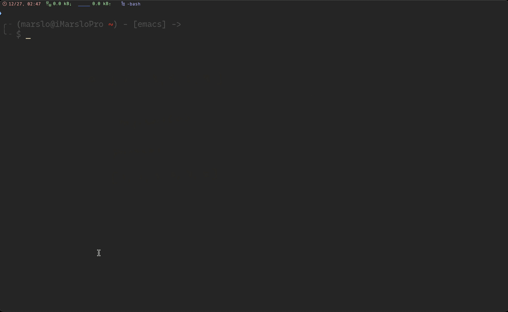

references:
- 20 Command Line Tools to Monitor Linux Performance
- 20 Linux System Monitoring Tools Every SysAdmin Should Know
- Top 25 Best Linux Performance Monitoring and Debugging Tools
- http://www.thegeekstuff.com/2010/12/50-unix-linux-sysadmin-tutorials
- 16 commands to check hardware information on Linux
- Best UNIX shell-based tools
- * alebcay/awesome-shell
- * rockerBOO/awesome-neovim
- jlevy/the-art-of-command-line
- Learn Enough Command Line to Be Dangerous
- Shell Style Guide
- Use Bash Strict Mode (Unless You Love Debugging)
- others
- My Minimalist Over-powered Linux Setup Guide
- * devynspencer/cute_commands.sh
utility
pass
[!NOTE]
env
$ export PASSWORD_STORE_DIR=~/.password-storeinsert
$ pass insert <NAME> # i.e.: $ pass insert test Enter password for test: abc Retype password for test: abc $ pass test abc # copy $ pass -c test Copied test to clipboard. Will clear in 45 seconds. 1.4.1.1 -- pass insert advanced usage
pw
pw() { export PASSWORD_STORE_CLIP_TIME=8 export PASSWORD_STORE_X_SELECTION=primary pass -c2 $1; sleep 5; pass -c $1; sleep 5; pass otp -c $1; exit }extend
# ~/.bashrc $ alias passred="PASSWORD_STORE_DIR=~/.pass/red pass" $ alias passblue="PASSWORD_STORE_DIR=~/.pass/blue pass" $ cat /usr/share/bash-completion/completions/pass _passred(){ PASSWORD_STORE_DIR=~/.pass/red/ _pass } complete -o filenames -o nospace -F _passred passred _passblue(){ PASSWORD_STORE_DIR=~/.pass/blue/ _pass } complete -o filenames -o nospace -F _passblue passblue $ source /usr/share/bash-completion/completions/passgit
$ git config --global credential.helper /usr/bin/pass-git-helper $ cat ~/.gitconfig [github.com] target=dev/github [*.fooo-bar.*] target=dev/fooo-bar- client
# create local password store $ pass init <gpg key id> # enable management of local changes through git $ pass git init # add the the remote git repository as 'origin' $ pass git remote add origin user@server:~/.password-store # push your local pass history $ pass git push -u --all
- client
network tools
[!NOTE|label:see also:]
vnstat
$ vnstat -l 1 -i en7
Monitoring en7... (press CTRL-C to stop)
rx: 4.10 kbit/s 21.00 KiB tx: 0 bit/s 6.00 KiB^C
en7 / traffic statistics
rx | tx
--------------------------------------+------------------
bytes 21.00 KiB | 6.00 KiB
--------------------------------------+------------------
max 53.25 kbit/s | 12.29 kbit/s
average 17.20 kbit/s | 4.92 kbit/s
min 0 bit/s | 0 bit/s
--------------------------------------+------------------
packets 60 | 52
--------------------------------------+------------------
max 15 p/s | 16 p/s
average 6 p/s | 5 p/s
min 2 p/s | 0 p/s
--------------------------------------+------------------
time 10 seconds
ipcalc
$ ipcalc 10.25.130.2/23
Address: 10.25.130.2 00001010.00011001.1000001 0.00000010
Netmask: 255.255.254.0 = 23 11111111.11111111.1111111 0.00000000
Wildcard: 0.0.1.255 00000000.00000000.0000000 1.11111111
=>
Network: 10.25.130.0/23 00001010.00011001.1000001 0.00000000
HostMin: 10.25.130.1 00001010.00011001.1000001 0.00000001
HostMax: 10.25.131.254 00001010.00011001.1000001 1.11111110
Broadcast: 10.25.131.255 00001010.00011001.1000001 1.11111111
Hosts/Net: 510 Class A, Private Internet
$ ipcalc 10.25.131.1/23
Address: 10.25.131.1 00001010.00011001.1000001 1.00000001
Netmask: 255.255.254.0 = 23 11111111.11111111.1111111 0.00000000
Wildcard: 0.0.1.255 00000000.00000000.0000000 1.11111111
=>
Network: 10.25.130.0/23 00001010.00011001.1000001 0.00000000
HostMin: 10.25.130.1 00001010.00011001.1000001 0.00000001
HostMax: 10.25.131.254 00001010.00011001.1000001 1.11111110
Broadcast: 10.25.131.255 00001010.00011001.1000001 1.11111111
Hosts/Net: 510 Class A, Private Internet
iostat
$ iostat
disk0 cpu load average
KB/t tps MB/s us sy id 1m 5m 15m
19.85 37 0.72 3 1 96 1.78 1.90 1.69
tcpdump
$ sudo tcpdump -A -i en7
tcpdump: verbose output suppressed, use -v or -vv for full protocol decode
listening on en7, link-type EN10MB (Ethernet), capture size 262144 bytes
00:33:02.787671 IP 10.25.130.117.53629 > a23-43-240-92.deploy.static.akamaitechnologies.com.https: Flags [.], ack 697481089, win 2048, length 0
E..(....@...
..u.+.\.}..r...)...P...:...
00:33:02.790119 IP 10.25.130.117.51541 > sh-vdc01.mycompany.com.domain: 53089+ PTR? 92.240.43.23.in-addr.arpa. (43)
E..GP....._.
..u
&t..U.5.3...a...........92.240.43.23.in-addr.arpa.....
00:33:02.812866 ARP, Request who-has gw-voice-idf.cdu-cn.mycompany.com tell gw-vg224-idf.cdu-cn.mycompany.com, length 46
....
....
13 packets captured
25 packets received by filter
0 packets dropped by kernel
-
$ sudo tcpdump -n -i any src or dst target.ip.address [ -v ] # i.e. $ sudo tcpdump -n -i any src or dst git.domain.com -v tcpdump: data link type PKTAP tcpdump: listening on any, link-type PKTAP (Apple DLT_PKTAP), snapshot length 524288 bytes 00:02:55.698822 IP (tos 0x0, ttl 64, id 0, offset 0, flags [DF], proto TCP (6), length 52) 10.25.130.104.63447 > 10.69.78.140.29418: Flags [F.], cksum 0x8fe0 (correct), seq 2566890566, ack 4019765769, win 2058, options [nop,nop,TS val 1955309758 ecr 154499413], length 0
dstat

strace
[!NOTE|label:references:]
$ ... run cmd ...
# or
$ pid=$(echo ??)
$ sudo strace -fp ${pid} -o log
# or
$ sudo -v
$ sudo strace -fp $$ -o log &
more
$ set -o functrace xtrace $ PS4=' ${BASH_SOURCE}:$FUNCNAME:$LINENO: '-
$ strace -e clone,execve,pipe,dup2 \ -f bash -c 'cat <(/bin/true) <(/bin/false) <(/bin/echo)' execve("/usr/bin/bash", ["bash", "-c", "cat <(/bin/true) <(/bin/false) <"...], 0x7fff9b9c6f98 /* 75 vars */) = 0 pipe([3, 4]) = 0 dup2(3, 63) = 63 clone(child_stack=NULL, flags=CLONE_CHILD_CLEARTID|CLONE_CHILD_SETTID|SIGCHLD, child_tidptr=0x7f7cf6a8ca10) = 289963 strace: Process 289963 attached [pid 289962] pipe([3, 4]) = 0 [pid 289962] dup2(3, 62) = 62 [pid 289962] clone(child_stack=NULL, flags=CLONE_CHILD_CLEARTID|CLONE_CHILD_SETTID|SIGCHLD <unfinished ...> [pid 289963] dup2(4, 1) = 1 [pid 289962] <... clone resumed>, child_tidptr=0x7f7cf6a8ca10) = 289964 strace: Process 289964 attached [pid 289963] clone(child_stack=NULL, flags=CLONE_CHILD_CLEARTID|CLONE_CHILD_SETTID|SIGCHLD <unfinished ...> [pid 289962] pipe([3, 4]) = 0 strace: Process 289965 attached [pid 289963] <... clone resumed>, child_tidptr=0x7f7cf6a8ca10) = 289965 [pid 289962] dup2(3, 61) = 61 [pid 289962] clone(child_stack=NULL, flags=CLONE_CHILD_CLEARTID|CLONE_CHILD_SETTID|SIGCHLD <unfinished ...> [pid 289964] dup2(4, 1) = 1 [pid 289965] execve("/bin/true", ["/bin/true"], 0x55ec7c007680 /* 73 vars */strace: Process 289966 attached <unfinished ...> [pid 289962] <... clone resumed>, child_tidptr=0x7f7cf6a8ca10) = 289966 [pid 289964] clone(child_stack=NULL, flags=CLONE_CHILD_CLEARTID|CLONE_CHILD_SETTID|SIGCHLD <unfinished ...> [pid 289965] <... execve resumed>) = 0 strace: Process 289967 attached [pid 289964] <... clone resumed>, child_tidptr=0x7f7cf6a8ca10) = 289967 [pid 289966] dup2(4, 1) = 1 [pid 289967] execve("/bin/false", ["/bin/false"], 0x55ec7c007af0 /* 73 vars */ <unfinished ...> [pid 289966] clone(child_stack=NULL, flags=CLONE_CHILD_CLEARTID|CLONE_CHILD_SETTID|SIGCHLD, child_tidptr=0x7f7cf6a8ca10) = 289968 [pid 289967] <... execve resumed>) = 0 strace: Process 289968 attached [pid 289962] execve("/usr/bin/cat", ["cat", "/dev/fd/63", "/dev/fd/62", "/dev/fd/61"], 0x55ec7c007bc0 /* 73 vars */ <unfinished ...> [pid 289968] execve("/bin/echo", ["/bin/echo"], 0x55ec7c007e20 /* 73 vars */ <unfinished ...> [pid 289962] <... execve resumed>) = 0 [pid 289968] <... execve resumed>) = 0 [pid 289965] +++ exited with 0 +++ [pid 289963] --- SIGCHLD {si_signo=SIGCHLD, si_code=CLD_EXITED, si_pid=289965, si_uid=10564, si_status=0, si_utime=0, si_stime=0} --- [pid 289963] +++ exited with 0 +++ [pid 289962] --- SIGCHLD {si_signo=SIGCHLD, si_code=CLD_EXITED, si_pid=289963, si_uid=10564, si_status=0, si_utime=0, si_stime=0} --- [pid 289967] +++ exited with 1 +++ [pid 289964] --- SIGCHLD {si_signo=SIGCHLD, si_code=CLD_EXITED, si_pid=289967, si_uid=10564, si_status=1, si_utime=0, si_stime=0} --- [pid 289964] +++ exited with 1 +++ [pid 289962] --- SIGCHLD {si_signo=SIGCHLD, si_code=CLD_EXITED, si_pid=289964, si_uid=10564, si_status=1, si_utime=0, si_stime=0} --- [pid 289968] +++ exited with 0 +++ [pid 289966] --- SIGCHLD {si_signo=SIGCHLD, si_code=CLD_EXITED, si_pid=289968, si_uid=10564, si_status=0, si_utime=0, si_stime=0} --- [pid 289966] +++ exited with 0 +++ --- SIGCHLD {si_signo=SIGCHLD, si_code=CLD_EXITED, si_pid=289966, si_uid=10564, si_status=0, si_utime=0, si_stime=0} --- +++ exited with 0 +++ -
xtrace() { local eval_cmd printf -v eval_cmd '%q' "${@}" { set -x eval "${eval_cmd}" } 2>&1 | grep '^++' return "${PIPESTATUS[0]}" }
dtruss
[!TIP]
- the MacOS alternatives
strace- Using modified dtruss.sh
$ sudo dtruss <cmd>
$ sudo dtruss ls
dtrace: system integrity protection is on, some features will not be available
SYSCALL(args) = return
README.md artifactory devops jenkins osx screenshot vim
SUMMARY.md cheatsheet english linux programming tools virtualization
munmap(0x1155AB000, 0xA0000) = 0 0
munmap(0x11564B000, 0x8000) = 0 0
munmap(0x115653000, 0x4000) = 0 0
munmap(0x115657000, 0x4000) = 0 0
munmap(0x11565B000, 0x58000) = 0 0
fsgetpath(0x7FF7BA418580, 0x400, 0x7FF7BA418568) = 40 0
fsgetpath(0x7FF7BA418580, 0x400, 0x7FF7BA418568) = 14 0
csrctl(0x0, 0x7FF7BA41898C, 0x4) = -1 1
__mac_syscall(0x7FF819AD4E1B, 0x2, 0x7FF7BA4187F0) = 0 0
csrctl(0x0, 0x7FF7BA41899C, 0x4) = -1 1
__mac_syscall(0x7FF819AD1DA4, 0x5A, 0x7FF7BA418930) = 0 0
dtrace: error on enabled probe ID 1741 (ID 573: syscall::sysctl:return): invalid kernel access in action #10 at DIF offset 28
dtrace: error on enabled probe ID 1741 (ID 573: syscall::sysctl:return): invalid kernel access in action #10 at DIF offset 28
dtrace: error on enabled probe ID 1741 (ID 573: syscall::sysctl:return): invalid kernel access in action #10 at DIF offset 28
dtrace: error on enabled probe ID 1741 (ID 573: syscall::sysctl:return): invalid kernel access in action #10 at DIF offset 28
open("/\0", 0x20100000, 0x0) = 3 0
openat(0x3, "System/Cryptexes/OS\0", 0x100000, 0x0) = 4 0
dup(0x4, 0x0, 0x0) = 5 0
fstatat64(0x4, 0x7FF7BA4176D1, 0x7FF7BA417AD0) = 0 0
openat(0x4, "System/Library/dyld/\0", 0x100000, 0x0) = 6 0
fcntl(0x6, 0x32, 0x7FF7BA417760) = 0 0
dup(0x6, 0x0, 0x0) = 7 0
dup(0x5, 0x0, 0x0) = 8 0
close(0x3) = 0 0
close(0x5) = 0 0
close(0x4) = 0 0
close(0x6) = 0 0
shared_region_check_np(0x7FF7BA418048, 0x0, 0x0) = 0 0
fsgetpath(0x7FF7BA4185B0, 0x400, 0x7FF7BA4184E8) = 83 0
fcntl(0x8, 0x32, 0x7FF7BA4185B0) = 0 0
close(0x8) = 0 0
close(0x7) = 0 0
getfsstat64(0x0, 0x0, 0x2) = 9 0
getfsstat64(0x106102040, 0x4C38, 0x2) = 9 0
getattrlist("/\0", 0x7FF7BA4184F0, 0x7FF7BA418460) = 0 0
stat64("/System/Volumes/Preboot/Cryptexes/OS/System/Library/dyld/dyld_shared_cache_x86_64h\0", 0x7FF7BA418828, 0x0) = 0 0
dtrace: error on enabled probe ID 1690 (ID 845: syscall::stat64:return): invalid address (0x0) in action #11 at DIF offset 12
stat64("/usr/local/Cellar/coreutils/9.4/bin/gls\0", 0x7FF7BA417CC0, 0x0) = 0 0
open("/usr/local/Cellar/coreutils/9.4/bin/gls\0", 0x0, 0x0) = 3 0
mmap(0x0, 0x33358, 0x1, 0x40002, 0x3, 0x0) = 0x105B18000 0
fcntl(0x3, 0x32, 0x7FF7BA417DD0) = 0 0
close(0x3) = 0 0
munmap(0x105B18000, 0x33358) = 0 0
stat64("/usr/local/Cellar/coreutils/9.4/bin/gls\0", 0x7FF7BA418220, 0x0) = 0 0
stat64("/usr/lib/libSystem.B.dylib\0", 0x7FF7BA417230, 0x0) = -1 2
stat64("/System/Volumes/Preboot/Cryptexes/OS/usr/lib/libSystem.B.dylib\0", 0x7FF7BA4171E0, 0x0) = -1 2
stat64("/usr/lib/libSystem.B.dylib\0", 0x7FF7BA417230, 0x0) = -1 2
stat64("/usr/lib/libobjc.A.dylib\0", 0x7FF7BA414E80, 0x0) = -1 2
stat64("/System/Volumes/Preboot/Cryptexes/OS/usr/lib/libobjc.A.dylib\0", 0x7FF7BA414E30, 0x0) = -1 2
stat64("/usr/lib/libobjc.A.dylib\0", 0x7FF7BA414E80, 0x0) = -1 2
stat64("/usr/lib/system/libsystem_blocks.dylib\0", 0x7FF7BA414E80, 0x0) = -1 2
stat64("/System/Volumes/Preboot/Cryptexes/OS/usr/lib/system/libsystem_blocks.dylib\0", 0x7FF7BA414E20, 0x0) = -1 2
stat64("/usr/lib/system/libsystem_blocks.dylib\0", 0x7FF7BA414E80, 0x0) = -1 2
stat64("/usr/lib/system/libxpc.dylib\0", 0x7FF7BA414E80, 0x0) = -1 2
stat64("/System/Volumes/Preboot/Cryptexes/OS/usr/lib/system/libxpc.dylib\0", 0x7FF7BA414E30, 0x0) = -1 2
stat64("/usr/lib/system/libxpc.dylib\0", 0x7FF7BA414E80, 0x0) = -1 2
stat64("/usr/lib/system/libsystem_trace.dylib\0", 0x7FF7BA414E80, 0x0) = -1 2
stat64("/System/Volumes/Preboot/Cryptexes/OS/usr/lib/system/libsystem_trace.dylib\0", 0x7FF7BA414E20, 0x0) = -1 2
stat64("/usr/lib/system/libsystem_trace.dylib\0", 0x7FF7BA414E80, 0x0) = -1 2
stat64("/usr/lib/system/libcorecrypto.dylib\0", 0x7FF7BA414E80, 0x0) = -1 2
stat64("/System/Volumes/Preboot/Cryptexes/OS/usr/lib/system/libcorecrypto.dylib\0", 0x7FF7BA414E30, 0x0) = -1 2
stat64("/usr/lib/system/libcorecrypto.dylib\0", 0x7FF7BA414E80, 0x0) = -1 2
stat64("/usr/lib/system/libsystem_malloc.dylib\0", 0x7FF7BA414E80, 0x0) = -1 2
stat64("/System/Volumes/Preboot/Cryptexes/OS/usr/lib/system/libsystem_malloc.dylib\0", 0x7FF7BA414E20, 0x0) = -1 2
stat64("/usr/lib/system/libsystem_malloc.dylib\0", 0x7FF7BA414E80, 0x0) = -1 2
stat64("/usr/lib/system/libdispatch.dylib\0", 0x7FF7BA414E80, 0x0) = -1 2
stat64("/System/Volumes/Preboot/Cryptexes/OS/usr/lib/system/libdispatch.dylib\0", 0x7FF7BA414E30, 0x0) = -1 2
stat64("/usr/lib/system/libdispatch.dylib\0", 0x7FF7BA414E80, 0x0) = -1 2
stat64("/usr/lib/system/libsystem_featureflags.dylib\0", 0x7FF7BA414E80, 0x0) = -1 2
stat64("/System/Volumes/Preboot/Cryptexes/OS/usr/lib/system/libsystem_featureflags.dylib\0", 0x7FF7BA414E20, 0x0) = -1 2
stat64("/usr/lib/system/libsystem_featureflags.dylib\0", 0x7FF7BA414E80, 0x0) = -1 2
stat64("/usr/lib/system/libsystem_c.dylib\0", 0x7FF7BA414E80, 0x0) = -1 2
stat64("/System/Volumes/Preboot/Cryptexes/OS/usr/lib/system/libsystem_c.dylib\0", 0x7FF7BA414E30, 0x0) = -1 2
stat64("/usr/lib/system/libsystem_c.dylib\0", 0x7FF7BA414E80, 0x0) = -1 2
stat64("/usr/lib/libc++.1.dylib\0", 0x7FF7BA414E80, 0x0) = -1 2
stat64("/System/Volumes/Preboot/Cryptexes/OS/usr/lib/libc++.1.dylib\0", 0x7FF7BA414E30, 0x0) = -1 2
stat64("/usr/lib/libc++.1.dylib\0", 0x7FF7BA414E80, 0x0) = -1 2
stat64("/usr/lib/libc++abi.dylib\0", 0x7FF7BA414E80, 0x0) = -1 2
stat64("/System/Volumes/Preboot/Cryptexes/OS/usr/lib/libc++abi.dylib\0", 0x7FF7BA414E30, 0x0) = -1 2
stat64("/usr/lib/libc++abi.dylib\0", 0x7FF7BA414E80, 0x0) = -1 2
stat64("/usr/lib/system/libdyld.dylib\0", 0x7FF7BA414E80, 0x0) = -1 2
stat64("/System/Volumes/Preboot/Cryptexes/OS/usr/lib/system/libdyld.dylib\0", 0x7FF7BA414E30, 0x0) = -1 2
stat64("/usr/lib/system/libdyld.dylib\0", 0x7FF7BA414E80, 0x0) = -1 2
stat64("/usr/lib/system/libsystem_info.dylib\0", 0x7FF7BA414E80, 0x0) = -1 2
stat64("/System/Volumes/Preboot/Cryptexes/OS/usr/lib/system/libsystem_info.dylib\0", 0x7FF7BA414E30, 0x0) = -1 2
stat64("/usr/lib/system/libsystem_info.dylib\0", 0x7FF7BA414E80, 0x0) = -1 2
stat64("/usr/lib/system/libsystem_darwin.dylib\0", 0x7FF7BA414E80, 0x0) = -1 2
stat64("/System/Volumes/Preboot/Cryptexes/OS/usr/lib/system/libsystem_darwin.dylib\0", 0x7FF7BA414E20, 0x0) = -1 2
stat64("/usr/lib/system/libsystem_darwin.dylib\0", 0x7FF7BA414E80, 0x0) = -1 2
stat64("/usr/lib/system/libsystem_notify.dylib\0", 0x7FF7BA414E80, 0x0) = -1 2
stat64("/System/Volumes/Preboot/Cryptexes/OS/usr/lib/system/libsystem_notify.dylib\0", 0x7FF7BA414E20, 0x0) = -1 2
stat64("/usr/lib/system/libsystem_notify.dylib\0", 0x7FF7BA414E80, 0x0) = -1 2
stat64("/usr/lib/system/libsystem_networkextension.dylib\0", 0x7FF7BA414E80, 0x0) = -1 2
stat64("/System/Volumes/Preboot/Cryptexes/OS/usr/lib/system/libsystem_networkextension.dylib\0", 0x7FF7BA414E20, 0x0) = -1 2
stat64("/usr/lib/system/libsystem_networkextension.dylib\0", 0x7FF7BA414E80, 0x0) = -1 2
stat64("/usr/lib/system/libsystem_asl.dylib\0", 0x7FF7BA414E80, 0x0) = -1 2
stat64("/System/Volumes/Preboot/Cryptexes/OS/usr/lib/system/libsystem_asl.dylib\0", 0x7FF7BA414E30, 0x0) = -1 2
stat64("/usr/lib/system/libsystem_asl.dylib\0", 0x7FF7BA414E80, 0x0) = -1 2
stat64("/usr/lib/system/libsystem_symptoms.dylib\0", 0x7FF7BA414E80, 0x0) = -1 2
stat64("/System/Volumes/Preboot/Cryptexes/OS/usr/lib/system/libsystem_symptoms.dylib\0", 0x7FF7BA414E20, 0x0) = -1 2
stat64("/usr/lib/system/libsystem_symptoms.dylib\0", 0x7FF7BA414E80, 0x0) = -1 2
stat64("/usr/lib/system/libsystem_containermanager.dylib\0", 0x7FF7BA414E80, 0x0) = -1 2
stat64("/System/Volumes/Preboot/Cryptexes/OS/usr/lib/system/libsystem_containermanager.dylib\0", 0x7FF7BA414E20, 0x0) = -1 2
stat64("/usr/lib/system/libsystem_containermanager.dylib\0", 0x7FF7BA414E80, 0x0) = -1 2
stat64("/usr/lib/system/libsystem_configuration.dylib\0", 0x7FF7BA414E80, 0x0) = -1 2
stat64("/System/Volumes/Preboot/Cryptexes/OS/usr/lib/system/libsystem_configuration.dylib\0", 0x7FF7BA414E20, 0x0) = -1 2
stat64("/usr/lib/system/libsystem_configuration.dylib\0", 0x7FF7BA414E80, 0x0) = -1 2
stat64("/usr/lib/system/libsystem_sandbox.dylib\0", 0x7FF7BA414E80, 0x0) = -1 2
stat64("/System/Volumes/Preboot/Cryptexes/OS/usr/lib/system/libsystem_sandbox.dylib\0", 0x7FF7BA414E20, 0x0) = -1 2
stat64("/usr/lib/system/libsystem_sandbox.dylib\0", 0x7FF7BA414E80, 0x0) = -1 2
stat64("/usr/lib/system/libquarantine.dylib\0", 0x7FF7BA414E80, 0x0) = -1 2
stat64("/System/Volumes/Preboot/Cryptexes/OS/usr/lib/system/libquarantine.dylib\0", 0x7FF7BA414E30, 0x0) = -1 2
stat64("/usr/lib/system/libquarantine.dylib\0", 0x7FF7BA414E80, 0x0) = -1 2
stat64("/usr/lib/system/libsystem_coreservices.dylib\0", 0x7FF7BA414E80, 0x0) = -1 2
stat64("/System/Volumes/Preboot/Cryptexes/OS/usr/lib/system/libsystem_coreservices.dylib\0", 0x7FF7BA414E20, 0x0) = -1 2
stat64("/usr/lib/system/libsystem_coreservices.dylib\0", 0x7FF7BA414E80, 0x0) = -1 2
stat64("/usr/lib/system/libsystem_m.dylib\0", 0x7FF7BA414E80, 0x0) = -1 2
stat64("/System/Volumes/Preboot/Cryptexes/OS/usr/lib/system/libsystem_m.dylib\0", 0x7FF7BA414E30, 0x0) = -1 2
stat64("/usr/lib/system/libsystem_m.dylib\0", 0x7FF7BA414E80, 0x0) = -1 2
stat64("/usr/lib/system/libmacho.dylib\0", 0x7FF7BA414E80, 0x0) = -1 2
stat64("/System/Volumes/Preboot/Cryptexes/OS/usr/lib/system/libmacho.dylib\0", 0x7FF7BA414E30, 0x0) = -1 2
stat64("/usr/lib/system/libmacho.dylib\0", 0x7FF7BA414E80, 0x0) = -1 2
stat64("/usr/lib/system/libcommonCrypto.dylib\0", 0x7FF7BA414E80, 0x0) = -1 2
stat64("/System/Volumes/Preboot/Cryptexes/OS/usr/lib/system/libcommonCrypto.dylib\0", 0x7FF7BA414E20, 0x0) = -1 2
stat64("/usr/lib/system/libcommonCrypto.dylib\0", 0x7FF7BA414E80, 0x0) = -1 2
stat64("/usr/lib/system/libunwind.dylib\0", 0x7FF7BA414E80, 0x0) = -1 2
stat64("/System/Volumes/Preboot/Cryptexes/OS/usr/lib/system/libunwind.dylib\0", 0x7FF7BA414E30, 0x0) = -1 2
stat64("/usr/lib/system/libunwind.dylib\0", 0x7FF7BA414E80, 0x0) = -1 2
stat64("/usr/lib/liboah.dylib\0", 0x7FF7BA414E80, 0x0) = -1 2
stat64("/System/Volumes/Preboot/Cryptexes/OS/usr/lib/liboah.dylib\0", 0x7FF7BA414E30, 0x0) = -1 2
stat64("/usr/lib/liboah.dylib\0", 0x7FF7BA414E80, 0x0) = -1 2
stat64("/usr/lib/system/libcopyfile.dylib\0", 0x7FF7BA414E80, 0x0) = -1 2
stat64("/System/Volumes/Preboot/Cryptexes/OS/usr/lib/system/libcopyfile.dylib\0", 0x7FF7BA414E30, 0x0) = -1 2
stat64("/usr/lib/system/libcopyfile.dylib\0", 0x7FF7BA414E80, 0x0) = -1 2
stat64("/usr/lib/system/libcompiler_rt.dylib\0", 0x7FF7BA414E80, 0x0) = -1 2
stat64("/System/Volumes/Preboot/Cryptexes/OS/usr/lib/system/libcompiler_rt.dylib\0", 0x7FF7BA414E30, 0x0) = -1 2
stat64("/usr/lib/system/libcompiler_rt.dylib\0", 0x7FF7BA414E80, 0x0) = -1 2
stat64("/usr/lib/system/libsystem_collections.dylib\0", 0x7FF7BA414E80, 0x0) = -1 2
stat64("/System/Volumes/Preboot/Cryptexes/OS/usr/lib/system/libsystem_collections.dylib\0", 0x7FF7BA414E20, 0x0) = -1 2
stat64("/usr/lib/system/libsystem_collections.dylib\0", 0x7FF7BA414E80, 0x0) = -1 2
stat64("/usr/lib/system/libsystem_secinit.dylib\0", 0x7FF7BA414E80, 0x0) = -1 2
stat64("/System/Volumes/Preboot/Cryptexes/OS/usr/lib/system/libsystem_secinit.dylib\0", 0x7FF7BA414E20, 0x0) = -1 2
stat64("/usr/lib/system/libsystem_secinit.dylib\0", 0x7FF7BA414E80, 0x0) = -1 2
stat64("/usr/lib/system/libremovefile.dylib\0", 0x7FF7BA414E80, 0x0) = -1 2
stat64("/System/Volumes/Preboot/Cryptexes/OS/usr/lib/system/libremovefile.dylib\0", 0x7FF7BA414E30, 0x0) = -1 2
stat64("/usr/lib/system/libremovefile.dylib\0", 0x7FF7BA414E80, 0x0) = -1 2
stat64("/usr/lib/system/libkeymgr.dylib\0", 0x7FF7BA414E80, 0x0) = -1 2
stat64("/System/Volumes/Preboot/Cryptexes/OS/usr/lib/system/libkeymgr.dylib\0", 0x7FF7BA414E30, 0x0) = -1 2
stat64("/usr/lib/system/libkeymgr.dylib\0", 0x7FF7BA414E80, 0x0) = -1 2
stat64("/usr/lib/system/libsystem_dnssd.dylib\0", 0x7FF7BA414E80, 0x0) = -1 2
stat64("/System/Volumes/Preboot/Cryptexes/OS/usr/lib/system/libsystem_dnssd.dylib\0", 0x7FF7BA414E20, 0x0) = -1 2
stat64("/usr/lib/system/libsystem_dnssd.dylib\0", 0x7FF7BA414E80, 0x0) = -1 2
stat64("/usr/lib/system/libcache.dylib\0", 0x7FF7BA414E80, 0x0) = -1 2
stat64("/System/Volumes/Preboot/Cryptexes/OS/usr/lib/system/libcache.dylib\0", 0x7FF7BA414E30, 0x0) = -1 2
stat64("/usr/lib/system/libcache.dylib\0", 0x7FF7BA414E80, 0x0) = -1 2
stat64("/usr/lib/libSystem.B.dylib\0", 0x7FF7BA414E80, 0x0) = -1 2
stat64("/System/Volumes/Preboot/Cryptexes/OS/usr/lib/libSystem.B.dylib\0", 0x7FF7BA414E30, 0x0) = -1 2
stat64("/usr/lib/libSystem.B.dylib\0", 0x7FF7BA414E80, 0x0) = -1 2
stat64("/usr/lib/system/libsystem_darwindirectory.dylib\0", 0x7FF7BA414E80, 0x0) = -1 2
stat64("/System/Volumes/Preboot/Cryptexes/OS/usr/lib/system/libsystem_darwindirectory.dylib\0", 0x7FF7BA414E20, 0x0) = -1 2
stat64("/usr/lib/system/libsystem_darwindirectory.dylib\0", 0x7FF7BA414E80, 0x0) = -1 2
open("/dev/dtracehelper\0", 0x2, 0x0) = 3 0
ioctl(0x3, 0x80086804, 0x7FF7BA416E18) = 0 0
close(0x3) = 0 0
open("/usr/local/Cellar/coreutils/9.4/bin/gls\0", 0x0, 0x0) = 3 0
__mac_syscall(0x7FF819AD4E1B, 0x2, 0x7FF7BA4163D0) = 0 0
map_with_linking_np(0x7FF7BA415FB0, 0x1, 0x7FF7BA415FE0) = -1 22
close(0x3) = 0 0
mprotect(0x105B08000, 0x4000, 0x1) = 0 0
shared_region_check_np(0xFFFFFFFFFFFFFFFF, 0x0, 0x0) = 0 0
mprotect(0x106100000, 0x40000, 0x1) = 0 0
access("/AppleInternal/XBS/.isChrooted\0", 0x0, 0x0) = -1 2
bsdthread_register(0x7FF819DC9B9C, 0x7FF819DC9B88, 0x2000) = 1073742303 0
getpid(0x0, 0x0, 0x0) = 49682 0
shm_open(0x7FF819C6CF42, 0x0, 0x19C6B388) = 3 0
fstat64(0x3, 0x7FF7BA417340, 0x0) = 0 0
mmap(0x0, 0x4000, 0x1, 0x40001, 0x3, 0x0) = 0x105B1A000 0
close(0x3) = 0 0
ioctl(0x2, 0x4004667A, 0x7FF7BA417404) = 0 0
mprotect(0x105B23000, 0x1000, 0x0) = 0 0
mprotect(0x105B2D000, 0x1000, 0x0) = 0 0
mprotect(0x105B2E000, 0x1000, 0x0) = 0 0
mprotect(0x105B38000, 0x1000, 0x0) = 0 0
mprotect(0x105B1E000, 0x98, 0x1) = 0 0
mprotect(0x105B1E000, 0x98, 0x3) = 0 0
mprotect(0x105B1E000, 0x98, 0x1) = 0 0
mprotect(0x105B39000, 0x1000, 0x1) = 0 0
mprotect(0x105B3A000, 0x98, 0x1) = 0 0
mprotect(0x105B3A000, 0x98, 0x3) = 0 0
mprotect(0x105B3A000, 0x98, 0x1) = 0 0
mprotect(0x105B1E000, 0x98, 0x3) = 0 0
mprotect(0x105B1E000, 0x98, 0x1) = 0 0
mprotect(0x105B39000, 0x1000, 0x3) = 0 0
mprotect(0x105B39000, 0x1000, 0x1) = 0 0
mprotect(0x106100000, 0x40000, 0x3) = 0 0
mprotect(0x106100000, 0x40000, 0x1) = 0 0
issetugid(0x0, 0x0, 0x0) = 0 0
mprotect(0x106100000, 0x40000, 0x3) = 0 0
getentropy(0x7FF7BA416C30, 0x20, 0x0) = 0 0
mprotect(0x106100000, 0x40000, 0x1) = 0 0
mprotect(0x106100000, 0x40000, 0x3) = 0 0
mprotect(0x106100000, 0x40000, 0x1) = 0 0
getattrlist("/usr/local/opt/coreutils/libexec/gnubin/ls\0", 0x7FF7BA4172E0, 0x7FF7BA4172F8) = 0 0
access("/usr/local/Cellar/coreutils/9.4/bin\0", 0x4, 0x0) = 0 0
open("/usr/local/Cellar/coreutils/9.4/bin\0", 0x0, 0x0) = 3 0
fstat64(0x3, 0x7FAEECF042E0, 0x0) = 0 0
csrctl(0x0, 0x7FF7BA41753C, 0x4) = 0 0
fcntl(0x3, 0x32, 0x7FF7BA4171F0) = 0 0
close(0x3) = 0 0
open("/usr/local/Cellar/coreutils/9.4/bin/Info.plist\0", 0x0, 0x0) = -1 2
proc_info(0x2, 0xC212, 0xD) = 64 0
csops_audittoken(0xC212, 0x10, 0x7FF7BA417540) = -1 22
dtrace: error on enabled probe ID 1741 (ID 573: syscall::sysctl:return): invalid kernel access in action #10 at DIF offset 28
dtrace: error on enabled probe ID 1741 (ID 573: syscall::sysctl:return): invalid kernel access in action #10 at DIF offset 28
csops(0xC212, 0x0, 0x7FF7BA4179A4) = 0 0
mprotect(0x106100000, 0x40000, 0x3) = 0 0
open_nocancel("/usr/share/locale/en_US.UTF-8/LC_COLLATE\0", 0x0, 0x0) = 3 0
fcntl_nocancel(0x3, 0x3, 0x0) = 0 0
getrlimit(0x1008, 0x7FF7BA417D10, 0x0) = 0 0
fstat64(0x3, 0x7FF7BA417C88, 0x0) = 0 0
dtrace: error on enabled probe ID 1714 (ID 961: syscall::read_nocancel:return): invalid kernel access in action #12 at DIF offset 68
close_nocancel(0x3) = 0 0
open_nocancel("/usr/share/locale/en_US.UTF-8/LC_CTYPE\0", 0x0, 0x0) = 3 0
fcntl_nocancel(0x3, 0x3, 0x0) = 0 0
fstat64(0x3, 0x7FF7BA417DD0, 0x0) = 0 0
fstat64(0x3, 0x7FF7BA417BD8, 0x0) = 0 0
lseek(0x3, 0x0, 0x1) = 0 0
lseek(0x3, 0x0, 0x0) = 0 0
dtrace: error on enabled probe ID 1714 (ID 961: syscall::read_nocancel:return): invalid kernel access in action #12 at DIF offset 68
dtrace: error on enabled probe ID 1714 (ID 961: syscall::read_nocancel:return): invalid kernel access in action #12 at DIF offset 68
dtrace: error on enabled probe ID 1714 (ID 961: syscall::read_nocancel:return): invalid kernel access in action #12 at DIF offset 68
dtrace: error on enabled probe ID 1714 (ID 961: syscall::read_nocancel:return): invalid kernel access in action #12 at DIF offset 68
dtrace: error on enabled probe ID 1714 (ID 961: syscall::read_nocancel:return): invalid kernel access in action #12 at DIF offset 68
dtrace: error on enabled probe ID 1714 (ID 961: syscall::read_nocancel:return): invalid kernel access in action #12 at DIF offset 68
dtrace: error on enabled probe ID 1714 (ID 961: syscall::read_nocancel:return): invalid kernel access in action #12 at DIF offset 68
dtrace: error on enabled probe ID 1714 (ID 961: syscall::read_nocancel:return): invalid kernel access in action #12 at DIF offset 68
close_nocancel(0x3) = 0 0
open_nocancel("/usr/share/locale/en_US.UTF-8/LC_MONETARY\0", 0x0, 0x0) = 3 0
fstat64(0x3, 0x7FF7BA417DD8, 0x0) = 0 0
dtrace: error on enabled probe ID 1714 (ID 961: syscall::read_nocancel:return): invalid kernel access in action #12 at DIF offset 68
close_nocancel(0x3) = 0 0
open_nocancel("/usr/share/locale/en_US.UTF-8/LC_NUMERIC\0", 0x0, 0x0) = 3 0
fstat64(0x3, 0x7FF7BA417DD8, 0x0) = 0 0
dtrace: error on enabled probe ID 1714 (ID 961: syscall::read_nocancel:return): invalid kernel access in action #12 at DIF offset 68
close_nocancel(0x3) = 0 0
open_nocancel("/usr/share/locale/en_US.UTF-8/LC_TIME\0", 0x0, 0x0) = 3 0
fstat64(0x3, 0x7FF7BA417DD8, 0x0) = 0 0
dtrace: error on enabled probe ID 1714 (ID 961: syscall::read_nocancel:return): invalid kernel access in action #12 at DIF offset 68
close_nocancel(0x3) = 0 0
open_nocancel("/usr/share/locale/en_US.UTF-8/LC_MESSAGES/LC_MESSAGES\0", 0x0, 0x0) = 3 0
fstat64(0x3, 0x7FF7BA417DD8, 0x0) = 0 0
dtrace: error on enabled probe ID 1714 (ID 961: syscall::read_nocancel:return): invalid kernel access in action #12 at DIF offset 68
close_nocancel(0x3) = 0 0
ioctl(0x1, 0x4004667A, 0x7FF7BA418324) = 0 0
ioctl(0x1, 0x40087468, 0x7FF7BA4183F0) = 0 0
open_nocancel(".\0", 0x1100004, 0x0) = 3 0
dtrace: error on enabled probe ID 1741 (ID 573: syscall::sysctl:return): invalid kernel access in action #10 at DIF offset 28
dtrace: error on enabled probe ID 1741 (ID 573: syscall::sysctl:return): invalid kernel access in action #10 at DIF offset 28
fstatfs64(0x3, 0x7FF7BA417AB0, 0x0) = 0 0
getdirentries64(0x3, 0x7FAEED80FC00, 0x2000) = 568 0
close_nocancel(0x3) = 0 0
sigprocmask(0x1, 0x0, 0x7FF7BA418350) = 0x0 0
sigaltstack(0x0, 0x7FF7BA418340, 0x0) = 0 0
fstat64(0x1, 0x7FF7BA416E58, 0x0) = 0 0
ioctl(0x1, 0x4004667A, 0x7FF7BA416EA4) = 0 0
dtrace: error on enabled probe ID 1712 (ID 963: syscall::write_nocancel:return): invalid kernel access in action #12 at DIF offset 68
dtrace: error on enabled probe ID 1712 (ID 963: syscall::write_nocancel:return): invalid kernel access in action #12 at DIF offset 68
close_nocancel(0x1) = 0 0
close_nocancel(0x2) = 0 0
troubleshooting
dtrace: system integrity protection is on[!TIP]
# csrutil disable # or # csrutil enable --without dtrace # or # csrutil enable --without dtrace --without debug
sar
netcat
[!NOTE] references:
check particular port
$ nc -zv 127.0.0.1 22 Connection to 127.0.0.1 port 22 [tcp/ssh] succeeded!check ports in range
$ nc -znv -w 1 127.0.0.1 20-30 nc: connectx to 127.0.0.1 port 20 (tcp) failed: Connection refused nc: connectx to 127.0.0.1 port 21 (tcp) failed: Connection refused Connection to 127.0.0.1 port 22 [tcp/*] succeeded! nc: connectx to 127.0.0.1 port 23 (tcp) failed: Connection refused nc: connectx to 127.0.0.1 port 24 (tcp) failed: Connection refused nc: connectx to 127.0.0.1 port 25 (tcp) failed: Connection refused nc: connectx to 127.0.0.1 port 26 (tcp) failed: Connection refused nc: connectx to 127.0.0.1 port 27 (tcp) failed: Connection refused nc: connectx to 127.0.0.1 port 28 (tcp) failed: Connection refusedrunning simple web server
$ cat > index.html <<<EOF <!DOCTYPE html> <html> <head> <title>Simple Netcat Server</title> </head> <body> <h1>Welcome to simple netcat server!<h1> </body> </body> <html> EOF $ echo -e "HTTP/1.1 200 OK\n\n$(cat index.html)" | nc -l 1234or getting more
$ while true; do echo -e "HTTP/1.1 200 OK\n\n$(cat index.html)" | nc -l -w 1 1234; done GET / HTTP/1.1 Host: localhost:1234 Connection: keep-alive sec-ch-ua: "Chromium";v="110", "Not A(Brand";v="24", "Google Chrome";v="110" sec-ch-ua-mobile: ?0 sec-ch-ua-platform: "macOS" Upgrade-Insecure-Requests: 1 User-Agent: Mozilla/5.0 (Macintosh; Intel Mac OS X 10_15_7) AppleWebKit/537.36 (KHTML, like Gecko) Chrome/110.0.0.0 Safari/537.36 Accept: text/html,application/xhtml+xml,application/xml;q=0.9,image/avif,image/webp,image/apng,*/*;q=0.8,application/signed-exchange;v=b3;q=0.7 Sec-Fetch-Site: none Sec-Fetch-Mode: navigate Sec-Fetch-User: ?1 Sec-Fetch-Dest: document Accept-Encoding: gzip, deflate, br Accept-Language: en,zh-CN;q=0.9,zh;q=0.8,en-US;q=0.7 GET /favicon.ico HTTP/1.1 Host: localhost:1234 Connection: keep-alive sec-ch-ua: "Chromium";v="110", "Not A(Brand";v="24", "Google Chrome";v="110" sec-ch-ua-mobile: ?0 User-Agent: Mozilla/5.0 (Macintosh; Intel Mac OS X 10_15_7) AppleWebKit/537.36 (KHTML, like Gecko) Chrome/110.0.0.0 Safari/537.36 sec-ch-ua-platform: "macOS" Accept: image/avif,image/webp,image/apng,image/svg+xml,image/*,*/*;q=0.8 Sec-Fetch-Site: same-origin Sec-Fetch-Mode: no-cors Sec-Fetch-Dest: image Referer: http://localhost:1234/ Accept-Encoding: gzip, deflate, br Accept-Language: en,zh-CN;q=0.9,zh;q=0.8,en-US;q=0.7 ...1.4.1.5 -- netcat web service
ip
$ ip addr show | sed -nE "s/inet\s(.*)\/[0-9]+.*\s(\w+)/\2 \1/p"
lo0 127.0.0.1
en0 192.168.1.71
# for linux
$ ip addr show | sed -nE "s/inet\s(.*)\/[0-9]+.*\s(\w+)/\2 \1/p" | column -to ' => '
lo0 => 127.0.0.1
en0 => 192.168.1.71